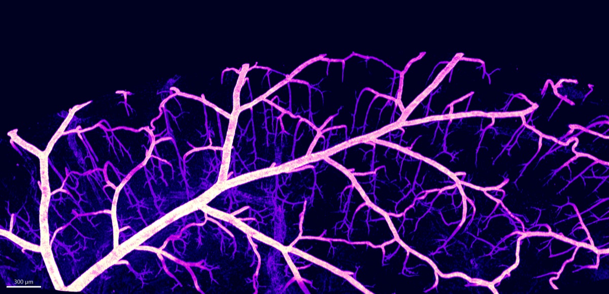
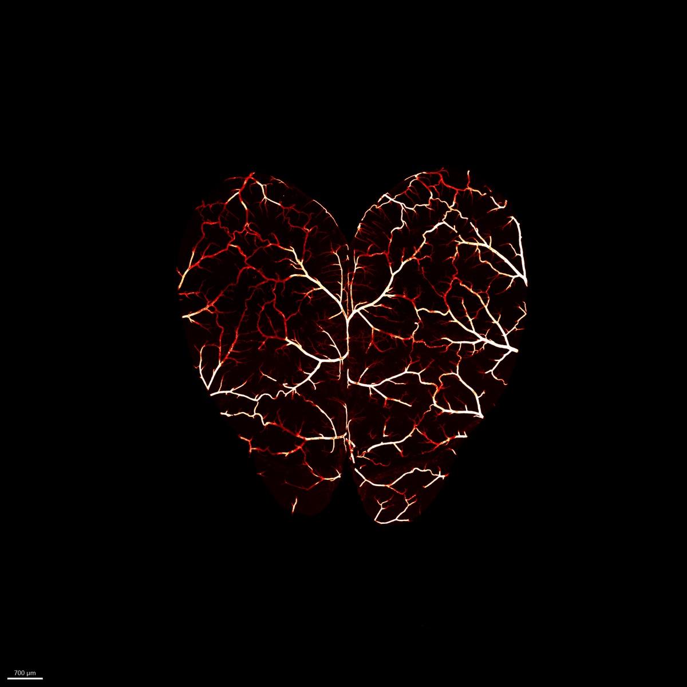
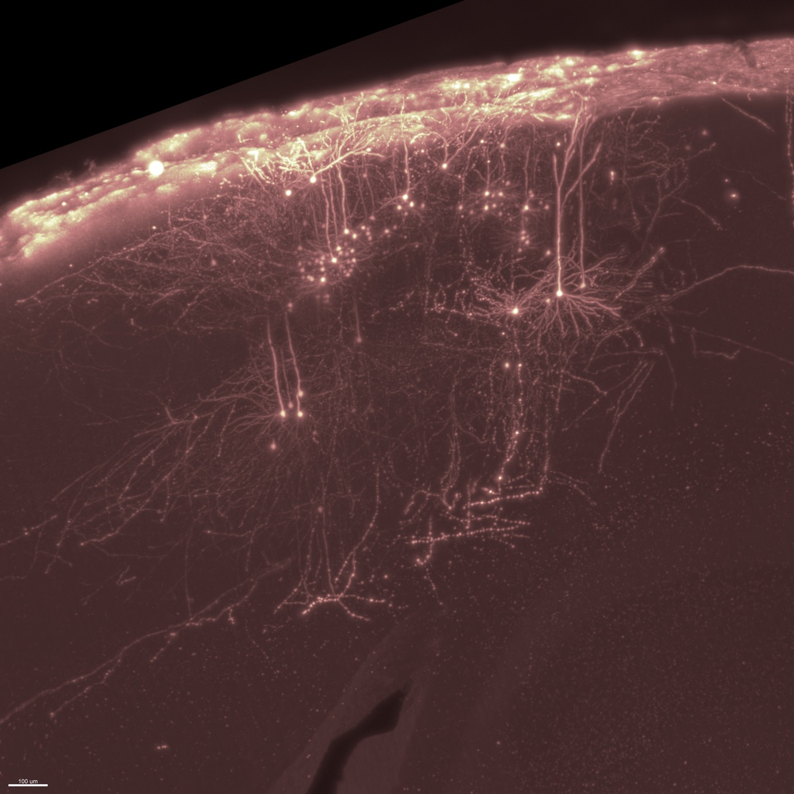
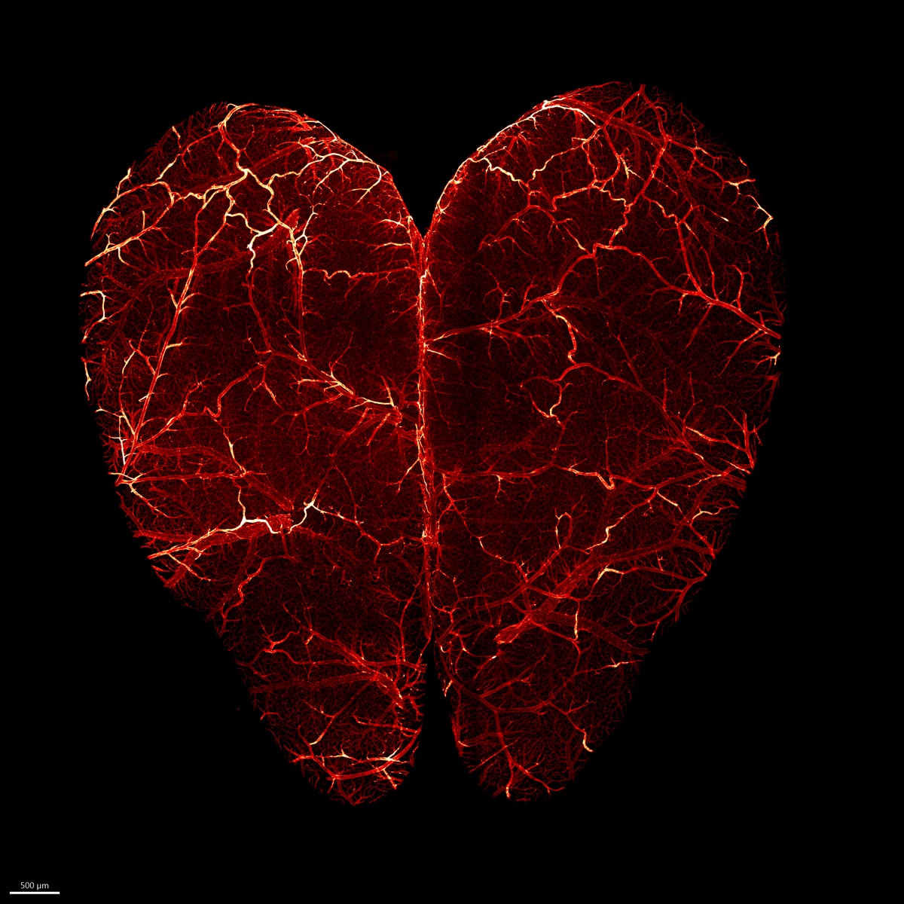
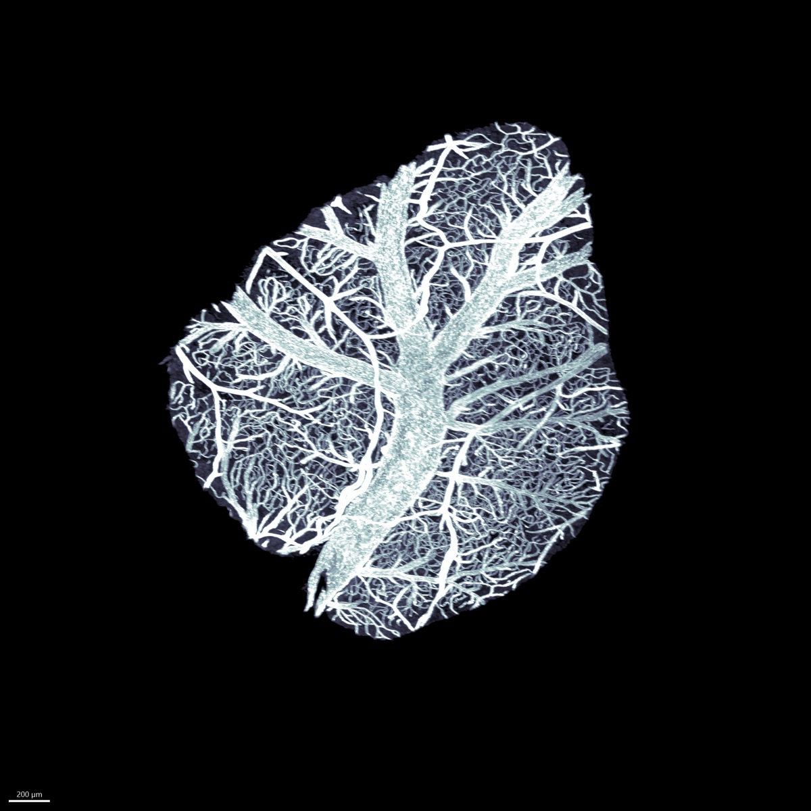
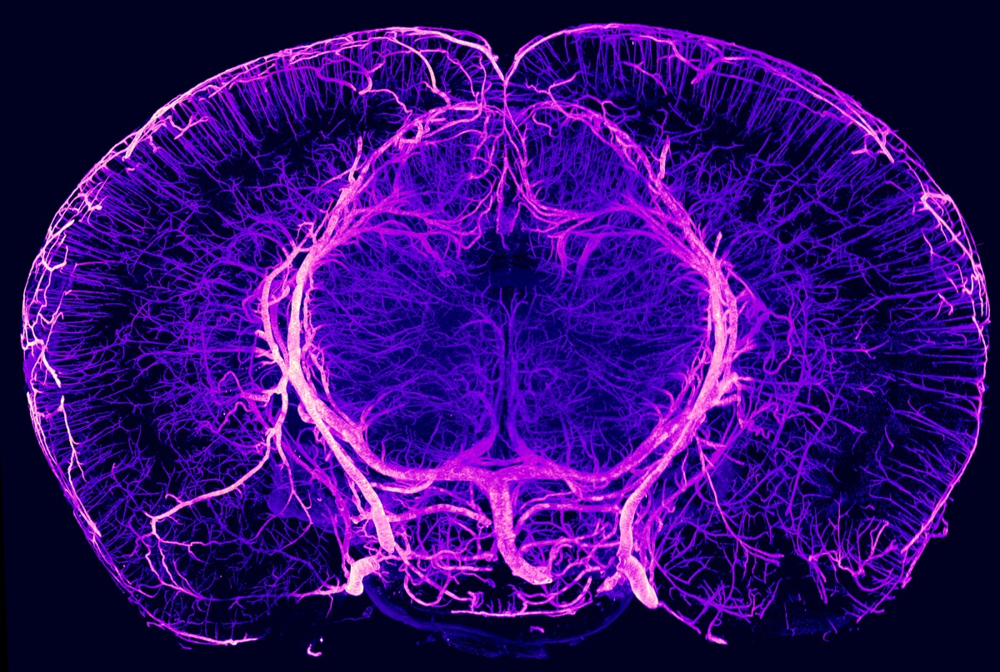
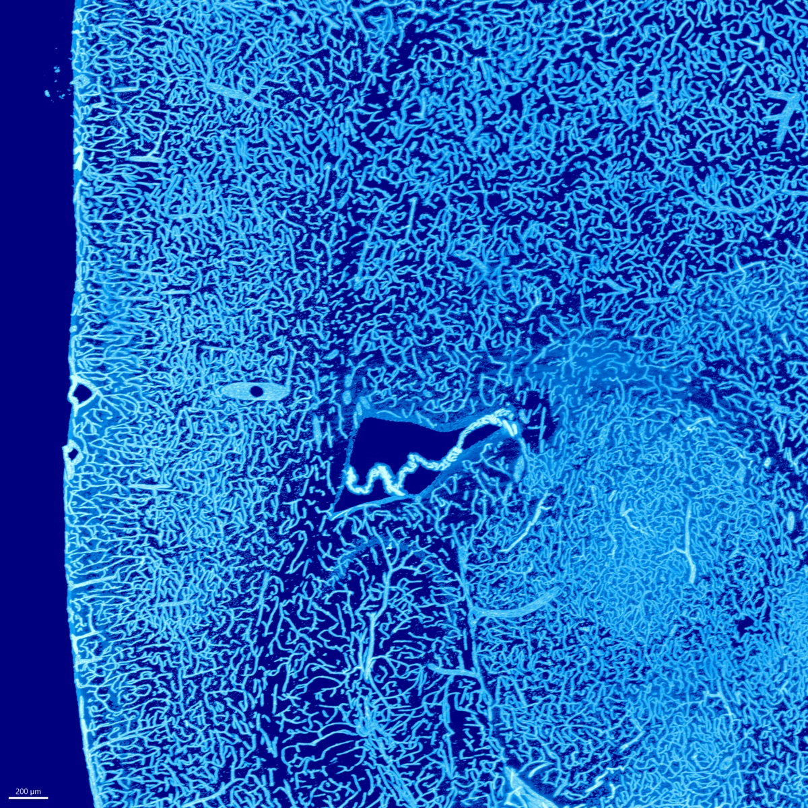

Laboratory of Structural Plasticity
Mapping the Brain's Architecture
We study how neuronal and vascular networks remodel during development and in the adult brain, shaping neuronal functions and behavior. For this, we develop and use 3D imaging technologies to map the whole brain at cellular resolution.
Paris Brain Institute (ICM), Paris, France
Our Research
Understanding Brain Plasticity
Our lab investigates the bidirectional relationship between neurovascular plasticity and brain function. We combine advanced 3D imaging with systems neuroscience to explore how experience shapes brain networks and how structural remodeling drives behavioral adaptation.

Whole-Brain Imaging
Tissue clearing and light-sheet microscopy for mapping cells and networks at cellular resolution across entire brains.
Explore →
Neurovascular Plasticity
Mapping and understanding how the brain's vascular architecture remodels in response to physiological states like pregnancy.
Explore →
Behavioral Flexibility
Linking structural brain plasticity to behavioral individuality and the neural basis of complex innate behaviors.
Explore →



News
Latest Updates

Developmental vascular atlas published in Cell
Our comprehensive 3D atlas of postnatal brain vascularization has been published in Cell. This work reveals a three-phase trajectory of brain vascular development, with implications for understanding neurodevelopmental disorders.

Marwa Cherfaoui awarded an FRM PhD fellowship
Congratulations to Marwa Cherfaoui, who has been awarded a PhD fellowship from the Fondation pour la Recherche Médicale (FRM) for her project on the role of brain macrophages during pregnancy.

Gabrièle Lienhard awarded an FRM fourth-year fellowship
Congratulations to Gabrièle Lienhard, who has received a fourth-year PhD fellowship from the Fondation pour la Recherche Médicale (FRM) to continue her work on vascular plasticity during pregnancy.